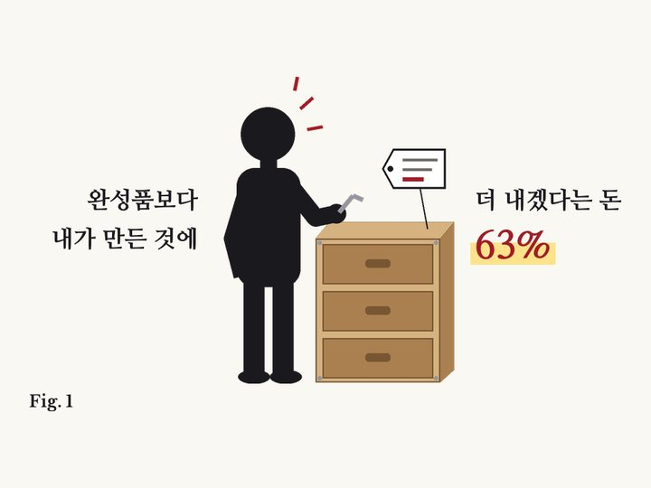
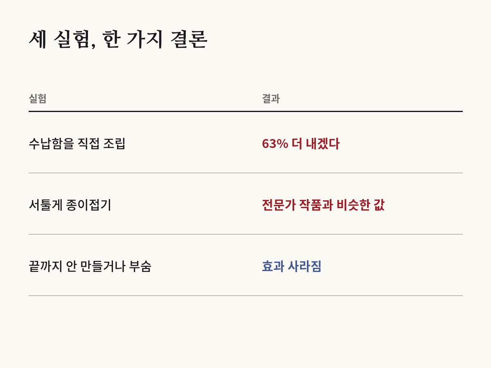

내가 조립한 수납함엔 남이 조립한 것보다 돈을 63% 더 낸다
Michael I. Norton, Daniel Mochon, Dan Ariely · Journal of Consumer Psychology, 2012

01결과
미국 하버드대학교 경영대학원과 듀크대학교 연구진이 사람들에게 이케아의 단순한 수납함을 직접 조립하게 했어요. 설명서를 보며 따라 하면 누구나 할 수 있는 수준이었어요.
다른 사람들은 조립을 하지 않고, 미리 조립해 둔 똑같은 상자를 살펴보기만 했어요.
그 다음 두 그룹에게 이 상자에 얼마까지 낼 수 있는지 물었어요. 직접 조립한 사람들은 이미 조립된 상자를 본 사람들보다 평균 63% 더 내겠다고 했어요. 상자를 더 마음에 들어 하기도 했어요.
연구진은 이 현상에 가구 회사 이름을 따서 '이케아 효과'라는 이름을 붙였어요.

02서툴러도 내 작품
다른 실험에서는 종이접기를 했어요. 처음 해 보는 사람들이 종이로 개구리와 학을 접었어요. 당연히 모양이 엉성했어요.
그런데 접은 사람들은 자기 작품에 꽤 높은 값을 매겼어요. 종이접기 전문가가 접은 작품과 비슷한 수준이었어요.
작품을 접지 않은 사람들의 평가는 달랐어요. 그 엉성한 작품에는 돈을 별로 내려 하지 않았어요. 내가 만든 것의 가치는 나에게만 크게 보였던 거예요.
03끝까지 만들어야 생긴다
연구진은 언제 이 효과가 사라지는지도 시험했어요. 상자를 마지막 두 단계만 남기고 멈추게 하자, 내겠다는 값이 다 만든 사람들보다 크게 낮았어요.
레고로 작품을 만든 뒤 곧바로 분해하게 했을 때도 효과가 사라졌어요.
연구진은 수고만으로는 부족하다고 설명해요. 노력이 '해냈다'는 결과로 이어질 때 그 물건을 아끼게 된다는 거예요. 같은 연구진의 후속 연구에서는 스스로 유능하다고 느끼고 싶은 마음이 이 효과와 이어져 있다는 결과도 나왔어요.
04아이들도 그럴까
영국과 독일 연구진은 2018년 학술지 《인지》에 이 효과가 언제 생기는지 살핀 연구를 실었어요. 3~6세 아이들에게 직접 무언가를 만들게 한 뒤, 직접 만든 것과 남이 만든 것 중 어느 쪽을 더 아끼는지 봤어요.
효과는 다섯 살 무렵 처음 나타났어요. 연구진은 이 나이가 아이들이 '나'라는 개념을 또렷하게 갖기 시작하는 때라는 점에 주목했어요.
흥미로운 점도 있었어요. 5~6세 아이들에게서는 얼마나 힘들게 만들었는지가 효과의 크기를 바꾸지 않았어요. '내 것'이라는 느낌만으로도 설명되지 않았어요. 수고했으니 아깝다거나 내 물건이라서 좋다는 설명만으로는 부족하고, 내가 만든 것이 나를 드러낸다는 느낌이 중요할 수 있다는 거예요.
05케이크 가루와 달걀
이 연구와 함께 자주 소개되는 이야기가 있어요. 물만 부으면 되는 즉석 케이크 가루가 처음 나왔을 때 생각만큼 잘 팔리지 않았고, 달걀을 직접 넣게 바꾸자 더 인기를 얻었다는 이야기예요.
널리 알려진 일화이지만 실제로 그 때문에 판매가 늘었는지는 분명하지 않아요. 다만 손이 조금 가면 결과물을 더 '내 것'으로 느낀다는 이 연구의 결론과 닮아 있어서 함께 언급되곤 해요.
06나와 무슨 상관일까
조금 기울어진 선반, 모양이 엉성한 뜨개질, 처음 만든 요리를 버리기 어려운 이유일지 몰라요. 남이 보기엔 평범해도 내 눈엔 특별해요.
반대로 생각해 볼 점도 있어요. 내가 만든 기획서나 계획이 유독 좋아 보인다면, 이케아 효과 때문에 실제보다 높게 평가하고 있을 수 있어요. 다른 사람의 눈으로 한 번 더 보는 게 도움이 돼요.
기업들도 이 효과를 써요. 고객이 직접 고르고 꾸미고 조립하게 하면 같은 물건이라도 더 아끼게 되니까요.
07읽을 때 주의할 점
실험은 값싼 물건과 적은 돈으로 했어요. 비싼 가구나 집처럼 큰 결정에서도 같은 크기로 나타날지는 알 수 없어요.
얼마를 내겠냐는 마음만 쟀고, 실제로 물건을 산 뒤 오래 만족했는지는 재지 않았어요.
바로잡습니다
- 2018년 아동 연구를 낸 연구진을 '영국 연구진'에서 '영국과 독일 연구진'으로 바로잡았습니다. 저자 세 명 가운데 한 명은 독일 베를린자유대학교 소속입니다. 또 조립을 '중간에' 멈춘 실험은 실제로는 '마지막 두 단계만 남기고' 멈춘 것이고, 이때 줄어든 것은 내겠다는 값이라 그렇게 바로잡았습니다.
원 논문
- Norton, Mochon & Ariely (2012), Journal of Consumer Psychology 22(3), 453–460